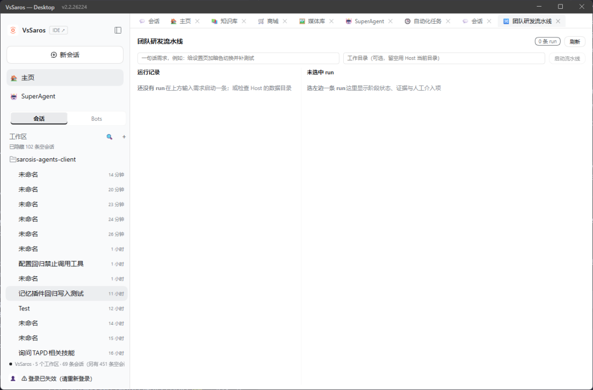

团队研发流水线 · 框架与使用报告
VsSaros / dsh 外部包工作台 local:dsh-teamflow-workbench · 基于上游 dsh-plugin-teamflow@0.3.3（MIT, 89aec4b）复刻 · 2026-11-04
1 · 报告摘要
把开源 dsh-plugin-teamflow 的自动研发流水线复刻进 VsSaros：不改上游一字地镜像源码、把纯逻辑内核机械 JS 化、用本仓宿主 seam 重写胶水、以外部包工作台形态装机，并完成界面与执行链的真机取证。详细架构见 框架说明。
2 · 框架总览
| 层 | 产物 | 关键决定 |
|---|---|---|
| P0 镜像 | incubator/dsh-plugin-teamflow/** | 不进 dsh-plugins/（那会把插件打进所有用户 profile 种子）；只加一行 ESLint 排除 |
| P1 内核 | port/mirror/**.js、port/*.mjs | Node 内置 stripTypeScriptTypes 机械剥离，不手工重写；哈希漂移守卫钉住真源与副本 |
| P2 外部包 | workbench/（dsh-teamflow-workbench@0.2.4） | 身份 local:<包名>，0 处宿主清单改动；Host 半 + 注册式 React 工作台 |
| P3 装机 | dev profile 的 file: 依赖 | 干跑 → 官方通道 dsh plugin add → 重启 → 真机取证；生产 profile 未动 |
宿主 seam 映射
| 上游 | 本仓 |
|---|---|
ctx.subagents.startActivation | vssarosRuns.run/cancel，会话 tf-<runId>-<phase> |
| typert / remote 描述符 | webServer.register 前缀 /x/teamflow + 同源 fetch |
$DSH_HOME/teamflow | !!js dshHomePath('dsh-teamflow-workbench') |
| TS/TSX + tsdown | 纯 JS chunk + window.__ModuleLoader__.load |
| 自建 run 状态 | 复用 vssarosWorkItems 账本状态机（cordis 服务，零跨包 import） |
执行链
需求 → suggestMode / resolveStages → journal 原子落盘
→ vssarosRuns.run 逐阶段（每阶段独立会话 + 工具白名单）
→ 证据块（命令 + 退出码 + 断言数）
→ QA 缺陷表（P0–P2）⇒ qaFix + 复验，≤2 轮，超限停线
→ 验收 worker 结论行 + 另一条会话 tf-<id>-verify 自己重跑检查
→ 两边 accepted 且 verifier 有证据才 done
→ ledger 账本 → /x/teamflow/api/status → React 面板
0.2.1-rc.2，上游要求 >=0.2.1-rc.5。没有升运行时，而是用适配层换掉宿主胶水；升级路线的成本与风险都更高。3 · VsSaros 原生界面导览 ★
下图是 VsSaros — Desktop v2.2.26224 的真实截图，工作台已打开、尚未启动任何 run。编号对应下方的区域说明表。

1 2 3 4 5 6 7| # | 区域（VsSaros 原生） | 看到什么 | 怎么用 |
|---|---|---|---|
| 1 | 左侧栏：VsSaros IDE 标识、「新会话」、主页 / SuperAgent、会话 / Bots 标签、工作区 sarosis-agents-client 与会话列表 |
宿主公共入口始终可见；底部还有登录态提示 | 工作台不依赖会话：没有会话也能正常用业务面板；只有要发给 Agent 的动作才需要会话。侧栏可展开/收起，工作台按自身容器宽度响应 |
| 2 | 顶部页签栏：会话 / 主页 / 知识库 / 商城 / 媒体库 / SuperAgent / 自动化任务 / … / 团队研发流水线 | 当前选中的是「团队研发流水线」页签；身份 local:dsh-teamflow-workbench |
展开左侧栏 → 工作台启动器里点「团队研发流水线」即可打开；注册式工作台会自动出现在启动器中，不需要额外登记清单 |
| 3 | 工作台工具条：标题「团队研发流水线」、右侧 0 条 run 徽标、「刷新」按钮 |
徽标是 data-teamflow-count 锚点，数字来自 /api/list |
点「刷新」重新拉取运行记录；工具条内恰好一个 data-dsh-workbench-toolbar 锚点，窄窗口时自动换行 |
| 4 | 需求输入：「一句话需求，例如：给设置页加暗色切换并补测试」 | 未输入时「启动流水线」是禁用态 | 填一句话需求。分诊是确定性的，修个错别字 → full、做个页面 → lite |
| 5 | 工作目录输入 + 启动按钮：「工作目录（可选，留空用 Host 当前目录）」 | 启动回执会显示实际 cwd，避免静默跑错目录 |
强烈建议填项目路径：阶段会话的 cwd 决定模型改哪里。点「启动流水线」后立即返回 runId / mode / stages / cwd / approval，阶段在后台驱动 |
| 6 | 左栏「运行记录」：run 列表、每行状态 chip | 空态文案「还没有 run / 在上方输入需求启动一条；或检查 Host 的数据目录」 | 点某条 run 即选中；状态有 running / completed / needs-human / interrupted / cancelled。崩溃残留的 running 会在插件加载时归正为 interrupted |
| 7 | 右栏详情：阶段状态、证据、独立验收徽标、needs-human 回答框、「从断点续跑」/「取消」 | 空态文案「选左边一条 run / 这里显示阶段状态、证据与人工介入项」 | 看每个阶段的 label / status；验收阶段会显示「独立验收 accepted」徽标。停线时这里出现原因 + 补充说明输入 +「提交并继续」 |
data-vssaros-surface="workbench"，用了 15 个不同 wb-* 原语，颜色全走 var(--…)，宽度用 @container 而非 @media；在 500px 视口下 wb-split 折叠成 1fr 单列、工具条换行，按钮与输入框无裁切、无横向滚动，页面 JS 错误为 []。4 · 使用方法（逐步）
打开工作台
在 VsSaros 里展开左侧栏（区域 1），从工作台启动器选「团队研发流水线」；打开后它会作为顶部页签出现（区域 2）。不需要先建会话，工作台业务区开箱可用。
如果启动器里没有：先确认插件已安装（工作台商城「已安装」），再点菜单 Harness → 重启 Harness（不是「立即重启」——那只重载窗口）。启动器底部若显示「装了但没能注册」+ 包名，按提示的原因改描述符/身份，不要重复安装。
启动一条流水线
在区域 4 填一句话需求，在区域 5 填工作目录，点「启动流水线」。
POST /x/teamflow/api/start
{ "requirement": "给设置页加暗色切换并补测试",
"options": { "cwd": "G:/your/project" } }
→ 200 { ok:true, runId:"tf-…", mode:"full",
stages:["prd","tech","dev","qa","acceptance"],
cwd:"G:/your/project", approval:{ allow:[…] } }
启动是异步的：回执立即返回，阶段在后台逐条驱动。用「刷新」或 teamflow_status 看进度。
cordis.patch.yml 的 allowTools 是背景子会话这一轮允许的工具名；当前为 []，写工具全拒。真机验证期间曾临时放行 [file_read, file_write, patch, search_files, terminal, execute_code]，已在 0.2.4 恢复。改它必须 bump 版本 + 重新 pack + 新暂存目录 + plugin add，HMR 不会重读 bundle 内 config。看阶段进度
左栏（区域 6）点选 run；右栏（区域 7）会列出每个阶段：需求与验收用例 / 技术方案 / 功能实现 / 自动测试 / 产品验收，各带状态 chip。验收阶段若已跑独立 verifier，会多一个「独立验收 accepted」徽标。
每个阶段要求模型交 [Verification evidence] 块（命令 + 退出码 + 断言数）；没有证据就写「无」，不得编造。QA 发现 P0–P2 缺陷时会自动插入 qaFix → qa 复验，最多 2 轮。
处理 needs-human（人工闸）
出现这些情况会停线并在右栏显示原因：worker 与独立 verifier 结论不一致、verifier 无可复核证据、QA 复验超 2 轮、vssarosRuns 服务不可用、普通阶段失败（空回复 / runner 异常）。
在 wb-diag 区填补充说明，点「提交并继续」（POST /api/answer）；流水线会从人工项继续，已完成的阶段不重跑。
teamflow_merge 永远返回 blocked，把 run 标为「需人工审核」。最终发布/合并必须人在界面同意。断点续跑 / 取消
右栏「从断点续跑」（POST /api/resume）：归正残留 running 账本、保留已完成阶段产物、其余阶段重置后重新驱动。Host 停机后，下次插件加载会把残留 running 归正为 interrupted 并标 wasInterrupted，界面能如实看到。
「取消」（POST /api/cancel）：置 cancelled 并尽力取消当前活动会话。
在会话里用模型工具
除了界面，也可在 VsSaros 会话里让 Agent 调用 teamflow_start / teamflow_status / teamflow_resume / …（见第 5 节）。写类工具会触发 tools/pre-execute 的 {kind:'ask'} 审批，需要你允许一次。
收尾：恢复安全默认
已在 0.2.4 收口：allowTools 已恢复 []（fail-closed），仓库源与 dev profile 已装副本逐字一致；这次 bump/重装触发了 bundle 重新组装。生产 profile 从未安装过这个包。
5 · 工具与接口
12 个模型侧工具
| 工具 | 类型 | 作用 |
|---|---|---|
teamflow_start | 写·ask | 启动流水线（分诊 → 后台驱动） |
teamflow_triage | 读 | 分诊预览，返回档位 / 理由 / 阶段集，不建 run |
teamflow_status | 读 | 阶段状态、证据、验收结论、独立验收结论 |
teamflow_backlog | 读 | backlog 条目 |
teamflow_claim / teamflow_assign / teamflow_update | 写·ask | 认领 / 指派 / 状态流转（todo/doing/blocked/done） |
teamflow_cancel / teamflow_resume | 写·ask | 取消 / 断点续跑 |
teamflow_pause / teamflow_resume_session | 写·ask | 会话级暂停与解除 |
teamflow_merge | 写·ask | 明确拒绝自动合并，转人工审核 |
HTTP 端点
GET /x/teamflow/?format=json、GET /api/list、GET /api/status、GET /api/backlog、POST /api/triage、POST /api/start、POST /api/cancel、POST /api/resume、POST /api/answer。工具与路由共用同一 controller，不重算判定；所有请求经 connection.requestRejection 的 Host/Origin 围栏与浏览器认证。
数据落盘
<数据根>/dsh-teamflow-workbench/ ├── runs/<runId>.json journal（原子写 + .bak 自愈） ├── ledger.json vssaros-workitem 账本 └── backlog.json 需求 / 缺陷条目
6 · 真机验证报告
6.1 run tf-mw1jte1l-qbvv
| 阶段 | 状态 | 证据长度 | 判定 |
|---|---|---|---|
prd 需求与验收用例 | done | 772 字符 | — |
tech 技术方案 | done | 265 字符 | 退出码 0 / 断言数 3 |
dev 功能实现 | done | 407 字符 | — |
qa 自动测试 | done | 622 字符 | defects=0 |
acceptance 产品验收 | done | 365 字符 | verdict=accepted + 结论行「验收结论：✅ 通过」 |
6.2 独立验收者（核心证据）
| 字段 | 值 |
|---|---|
| worker 会话 | tf-tf-mw1jte1l-qbvv-acceptance |
| verifier 会话 | tf-tf-mw1jte1l-qbvv-verify（不同会话，会话文件真实存在 12:19:45 / 7174B） |
| verdict | accepted |
| selfReported | false（不采信实现者汇报） |
| 断言 | 4 项全 PASS |
verifier 自己重跑的检查（不是抄 handoff）：
- 命令1: Get-ChildItem -Path "...\tf-min-run-final-20261104" -Force → 退出码 0；
目录内仅含 hello.txt（14 字节），无隐藏文件或其它条目
- 命令2: 读取文件 + 字节/十六进制分析 → 退出码 0；
字节序列 68 65 6c 6c 6f 20 74 65 61 6d 66 6c 6f 77 = hello teamflow，
无 BOM、无尾部换行符（CRLF/LF 均为 0）
- 断言数: 4
1. hello.txt 存在于指定目录 → PASS
2. 内容恰为 hello teamflow（大小写敏感、14 字节、无换行符） → PASS
3. 仅一行（按 LF 切分非空行数 = 1） → PASS
4. 指定目录内仅此单一产物，未植入其它文件 → PASS
- 注：「未改动其它目录」一项无基线快照可逐目录比对，但本次运行目录内只有这一个目标文件，
未发现其它目录被写入的证据。
验收结论：✅ 通过
accepted 且 verifier 有证据，阶段才判 done。交付产物 hello.txt 14B；账本里本 run 的 5 个阶段条目全部 done；/api/list 与 /api/status 与落盘 journal 逐字一致。6.3 守卫与界面取证
| 检查 | 结果 |
|---|---|
| 移植等价守卫 | 14/14 组 · 上游 856 / JS 化 856 断言 · 漂移 0 · 宿主依赖 0 · 内核副本 OK |
| 状态机语义探针 | 23/23 |
| 包内自检（伪 ctx 真跑 apply） | 91/91，含 9 条回归与 fail-closed 守卫 |
| 安装前干跑 | ok:true · 身份 local:dsh-teamflow-workbench · 0 error / 0 warning |
| 本仓守卫 | check-plugin-files 104/104 · check-host-config 24 项契约 0 违规 |
| 界面 DOM | 15 个 wb-* 类 · 工具栏锚点恰好 1 · container-type:inline-size · 零 iframe · jsErrors=[] |
| 窄窗口（500px / 工作台 444px） | wb-split:1fr 单列 · 工具条 wrap · 按钮/输入无裁切 · overflowX=0 |
| IDE 诊断 | 新增 JS/MJS 文件 0 条诊断 |
7 · 排障手册
| 现象 | 原因 | 处置 |
|---|---|---|
| 启动器里看不到「团队研发流水线」 | 插件未加载；Host 是 keepAlive，「立即重启」只重载窗口 | 点菜单 Harness → 重启 Harness；或看 /api/vssaros-workbenches/install-status 是否 pending |
| 启动器底部显示「装了但没能注册」 | 身份/描述符校验不过，或面板挂载失败 | 按提示的原因改描述符 / 改名，不要重复安装同一个包 |
| 「日志里没有 teamflow」 | 本插件 apply() 不打日志（与 workitem / loop 同） | 不要据此判断没加载；看数据根 runs/ 是否创建、/api/list 是否 200、window.__vssarosWb_teamflow 是否 registered:true |
改了 allowTools 但 /api/start 回执仍是 allow:[] | bundle 内 config 只在组装时读，HMR 不重读 | 改仓库源 → bump → pnpm pack → 新暂存目录 → dsh plugin add（spec 必须变化） |
plugin add 后页面打不开 / require('compression') 失败 | pnpm 删掉嵌套 negotiator/lib/accept.js | 同版本从顶层复制补回，再 touch profile package.json 触发 HMR 自愈 |
| Host 反复「父进程已退出 ⇒ 孤儿主动退出」 | dev app 残留僵尸实例占 profile 锁，启动器打印 HANDOFF-ZOMBIE | taskkill /F /IM "VsSaros Dev.exe"（只杀 dev 专用名，不碰打包版）→ node scripts/start-dev-app.mjs |
| 阶段卡住 / 模型无响应 | Host 停机、模型网关或会话无响应 | 看 <数据根>/.../runs/<id>.json 的阶段时间线与会话事件；单阶段超时由 timeoutMs 控制（当前 180000） |
阶段是 needs-human | 验收证据不足 / QA 超限 / 阶段失败 / runs 不可用 | 右栏看原因，填补充说明点「提交并继续」；修复后普通阶段失败会立即停线，不再白跑后续阶段 |
| 改了子块但界面还是旧的 | ?rev 由入口元数据派生，缓存 immutable | 升补丁版本 + touch lib/client.js（包内自检会钉住入口不比子块旧） |
8 · 已知边界
- 阶段 prompt 是精简自写版；上游完整
host/prompts/index.js已随内核带进包但未接线。 - 分诊用确定性
suggestMode，未接模型驱动的runTriage；token 计量未接（vssarosRuns回执无 usage），不伪造。 - QA 回环 ≤2 轮停线只在包内自检触发过，真机
defects=0未走到。 - 已修复 0.2.4
dev.outcome残留：resume()/answer()重跑前用resetStageResult()清结果字段，成功回合把outcome置null；4 条回归断言覆盖落盘一致性。 - 明暗主题切换未单独真机验证；CSS 无裸色、尺寸颜色全走
var(--…)。 - 数据根用
dshHomePath；随包化若要走foundation().dataRootOf(config)，需同步check-host-config.mjs的 foundationRef 份数。 - 生产 profile 未安装。随包化（改名
@vssaros/*+ 三清单 + codicon）与外部包形态互斥：并行会出现两个同名工作台入口。
9 · 命令速查
$mir = 'g:\SarosWorkspace\sarosis-agents-client\incubator\dsh-plugin-teamflow' $wb = Join-Path $mir 'workbench' Remove-Item Env:NODE_OPTIONS -ErrorAction SilentlyContinue node (Join-Path $mir 'port\port-core.mjs') # 重放 JS 化 + 同步内核副本 node (Join-Path $mir 'port\run-check.mjs') # P1/P2 统一守卫 node (Join-Path $mir 'port\run-bridge-check.mjs') # 状态机语义探针 cd $wb node test/run-teamflow-check.mjs # 包内自检 pnpm pack # 产出 .tgz node test/dry-run.mjs <.tgz 绝对路径> # 安装前干跑（不写盘） # 官方安装通道（spec 必须变化，否则 pnpm 不替换） $env:DSH_HOME = "$env:USERPROFILE\.vssaros-dev\dsh-home" node "$env:USERPROFILE\.vssaros-dev\dsh-runtime\0.2.1-alpha.3\node_modules\@deepseek-ai\dsh\lib\bin.js" ` plugin --profile vssaros add file:<新暂存目录> # 本仓既有守卫 node dsh-plugins/check-plugin-files.mjs node dsh-plugins/check-host-config.mjs
来源：上游 dsh-plugin-teamflow@0.3.3（MIT, 89aec4b094d0450b37c54d65f5dea469e0c01f02）· 本仓 incubator/dsh-plugin-teamflow/ · 工作台规范 0.3.26/566e1673。
配套文档：框架说明 framework.zh-CN.md。本报告为离线自包含 HTML，除内嵌截图外无外部依赖；支持浅色/暗色与打印。
生成时间：2026-11-04 · 状态：dev profile 已装机并真机验证；生产 profile 未安装。